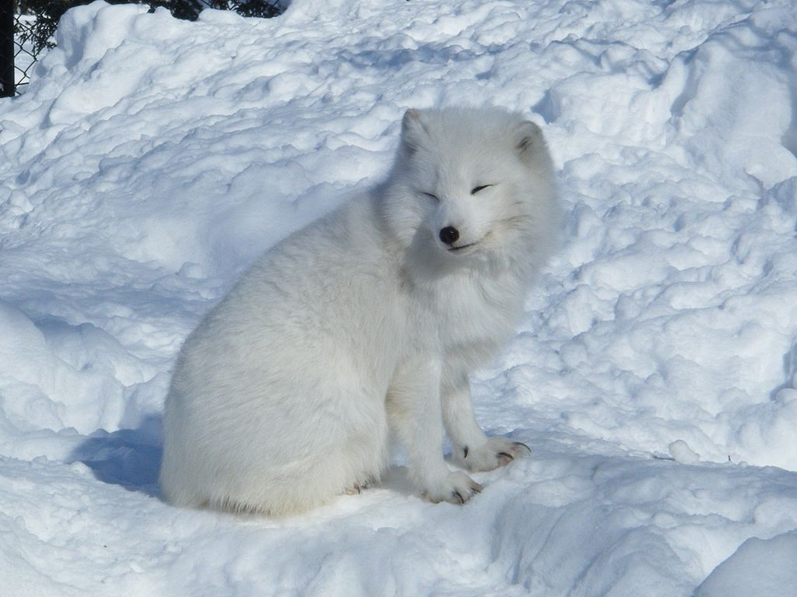

Cáo Bắc Cực
Cáo Bắc Cực (Vulpes lagopus), còn có tên cáo trắng hay cáo tuyết, là một loài cáo nhỏ có nguồn gốc từ vùng Bắc Cực ở Bắc bán cầu và thường sống tại quần xã ở đài nguyên Bắc Cực.[1][3] Loài cáo này thích nghi tốt với môi trường lạnh. Chúng sở hữu bộ lông dày có màu nâu vào mùa hạ và chuyển sang màu trắng vào mùa đông. Chiều dài cơ thể vào khoảng 46 đến 68 cm (18 đến 27 in) cùng với thân hình cong tròn giúp chúng giảm thiểu được sự truyền nhiệt từ cơ thể ra ngoài không khí.

Tập tính
Cáo Bắc Cực ăn thịt mọi sinh vật nhỏ mà chúng tìm thấy, bao gồm chuột Lemming, chuột đồng, hải cẩu đeo vòng non, các loài cá, thủy cầm và cả chim biển. Chúng còn ăn các xác thối, quả mọng, rong biển, côn trùng và những loài động vật không xương sống nhỏ khác. Cáo Bắc Cực hình thành những đôi đơn giao phối trong mùa sinh sản và chúng sẽ ở cùng nhau để nuôi dưỡng con non trong các hang dưới lòng đất. Đôi khi, những thành viên khác trong gia đình sẽ giúp chúng thực hiện công việc này.
Sinh sản
Cáo Bắc Cực sống tại những nơi cực kỳ lạnh giá trên hành tinh nhưng vẫn không bị run cho đến khi nhiệt độ xuống tận −70 °C (−94 °F). Giúp chúng thích nghi để sống sót trong cái lạnh là bộ lông dày, nhiều lớp và có tính cách nhiệt cao,[4][5] một hệ thống trao đổi nhiệt ngược chiều ở máu tuần hoàn tại bàn chân giúp duy trì nhiệt độ lõi cơ thể, và là một nguồn cung chất béo dồi dào. Loài cáo này có tỉ lệ diện tích bề mặt so thể tích thấp nhờ có thân hình săn chắc, mõm và chân ngắn, cùng đôi tai ngắn, dày. Càng ít diện tích bề mặt tiếp xúc với cái lạnh Bắc cực đồng nghĩa với việc càng ít nhiệt truyền từ cơ thể ra ngoài không khí. Lông mọc trên lòng bàn chân giúp cách nhiệt cũng như bước đi trên băng tuyết. Cáo Bắc Cực có thính giác cực nhạy định vị chính xác nơi những con vật nhỏ đang chuyển động dưới tuyết. Khi nắm bắt được vị trí con mồi, sẽ lao tới và vồ lấy nạn nhân xuyên qua lớp tuyết. Lông đổi màu theo mùa: đa số sẽ có màu trắng vào mùa đông để ẩn mình dưới tuyết trong khi vào mùa hạ sẽ có màu xám - nâu hoặc nâu sẫm. Tuy nhiên, trong vài quần thể, vài cá thể đôi khi sẽ có lông xám pha chút xanh nhạt vào mùa đông và trở nên nhạt hơn trong mùa hè.